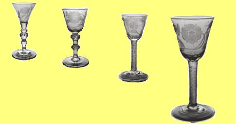
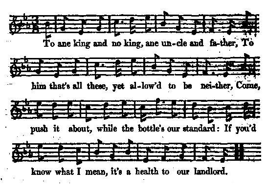
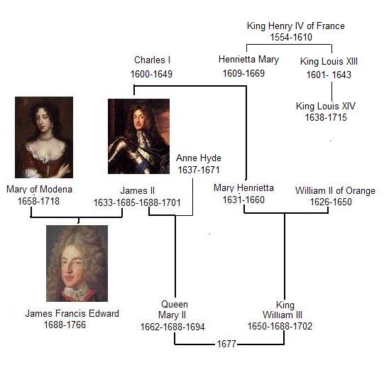
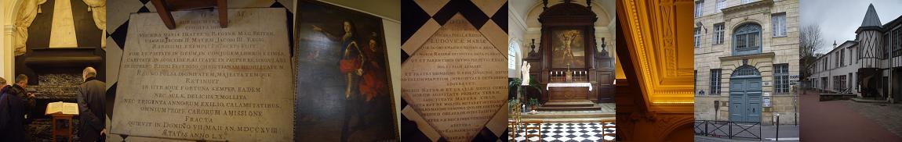

The Three Healths
Les trois toasts
A Jacobite Bacchanalian Song (ca 1700)
Tune - MélodieFrom James Hogg's "Jacobite Relics" Vol.2, N°21 page 46
Variant MIDI
Tunes sequenced by Ch. Souchon

|
To the tune: To know more about "bacchanalian songs", click here "Jacobite wine glasses" were produced engraved with cryptic references and motifs of discreet loyalty to the Stewart cause (oak leaves, thistles and roses). Hanoverians produced anti-Jacobite glass from which to drink their sovereign’s health. |
 |
A propos de la mélodie: Pour avoir quelques informations concernant les "chansons à boire", cliquer ici. On produisit des "verres à vin jacobites" où étaient gravés des allusions voilées et des signes discrets d'attachement à la cause des Stuarts (feuilles de chêne, chardons et roses). Les Hanovriens produisirent des verres anti-jacobites pour boire à la santé du roi. |

|
THE THREE HEALTHS
1. To ane king and nae king [1], ane uncle and father |
 |
LES TROIS TOASTS
1. Au roi qui n'est point un roi [1], mais oncle et père |
|
[1] King James II/VII deposed in 1688, who lived in France, at Saint-Germain-en-Laye. He was father to Queen Mary II and uncle to King William III. (See chart above).
[2] His second wife, the Catholic Mary of Modena, who had escaped to France on December 10, 1688 with her son.
[3] James Francis Edward Stuart (The "Old Pretender"), born in 1688. [4] William of Orange/ King William III. He also was Stadtholder of 5 Dutch provinces: Holland, Zeeland, Utrecht, Guilderland and Overijsel.
[5] "One" (or "Wan"?): the latter word could at that time (ca 1700) apply both to William who died of pneumonia in 1702, and to James II/VII, who lived during his last years as an austere penitent and died in 1701. |
[1] Le Roi Jacques II, déposé en 1688, vivait à Saint Germain en Laye. Il était le père de la Reine Marie II et l'oncle du Roi Guillaume III. (Cf. tableau ci-dessus). [2] Sa seconde épouse, la catholique Marie de Modène, qui avait fui en France avec son fils le 10 décembre 1688. Elle était la tante de Guillaume, sans être la mère de Marie.
[3] Jacques François Edouard Stuart (Le "Vieux Prétendant"), né en 1688. [4] Guillaume d'Orange/ le Roi Guillaume III. Il était aussi Stathouder de 5 Provinces néerlandaises: Hollande, Zélande, Utrecht, Gueldre et Haut-Ijssel.
[5] "Un" ou "pâle", selon l'orthographe. "Pâle" pouvait, vers 1700, s'appliquer tant à Guillaume qui mourut de pneumonie en 1702, qu'à Jacques II/VII qui vécut ses dernières années en austère pénitent et mourut en 1701. |

The "Collège des Ecossais" (65 rue du Cardinal Lemoine, Paris, 5) founded in 1662 by Robert Barclay. From l. to r.: Saint James's Chapel, completed in 1672, with cenotaph of King James II (+ 1701; the urn containing part of the King's remains was destroyed by the Revolution). Epitaph of Queen Mary of Modena (+1718). Portrait of King James II. Epitaph of Princess Louisa-Mary (+1712). Altar with painting of Saint James's martyrdom. Ceiling with Scottish insigns. Front gate of the college which was modified to account for the (1685) lowered level of the back then Rue des Fossés Saint-Victor. Whereas the back yard with its lovely turret remained unchanged. These premises - which nowadays harbour a Catholic private school - are still, at least partly, the Kirk of Scotland's property. (See also Over the Seas..).